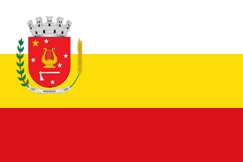
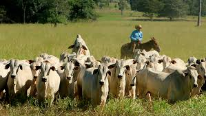

Sobre o Noroeste do Paraná
O Noroeste do Paraná é uma região com destaque para o desenvolvimento agropecuário e industrial. Veja as principais cidades e suas produções:
Maringá
Produção: Grãos, especialmente soja e milho.

Umuarama
Produção: Agricultura e pecuária.
Colorado
Produção: Grãos e pecuária.